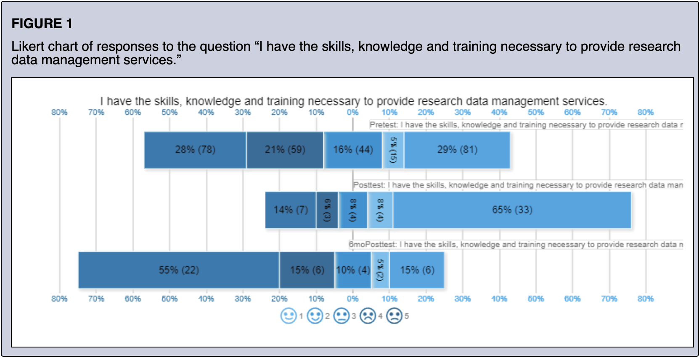
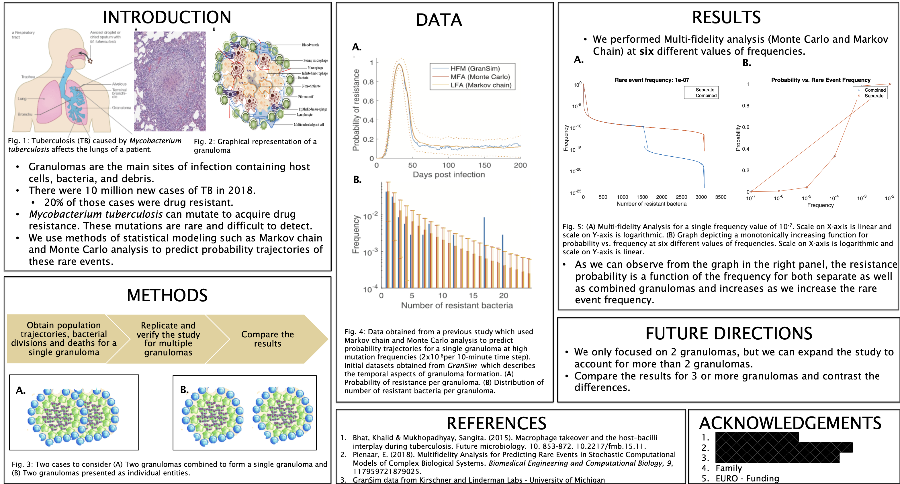
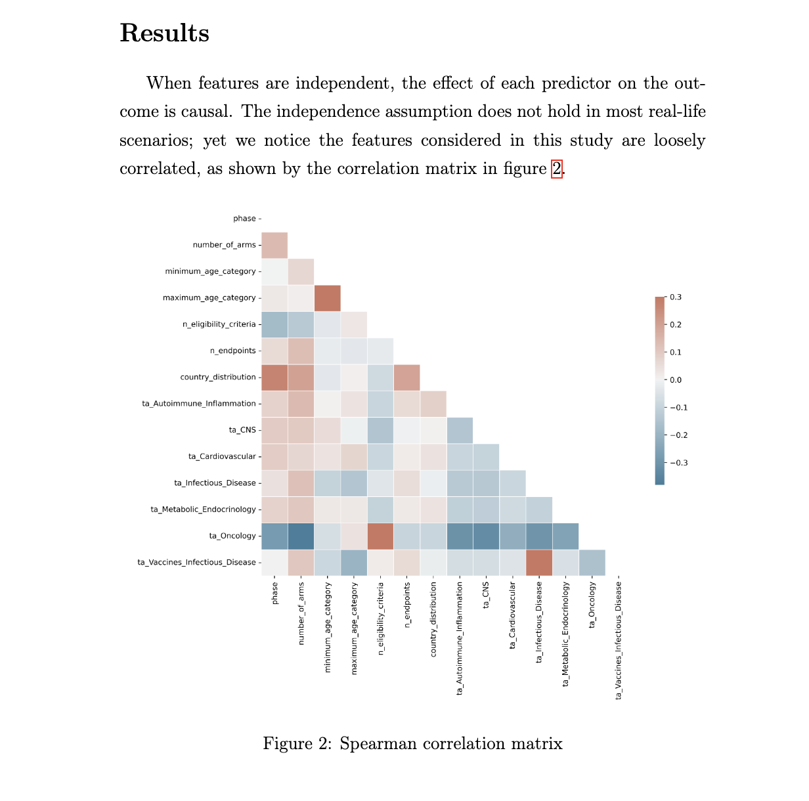

Here are some of the data analysis projects we've worked on for social science research. These projects demonstrate our expertise in various data analysis techniques and tools.
Description: A detailed analysis of RoadShow responses collected from 3 extensive surveys.
Tools Used: R, Python
Description: Analysis of the emergence of drug resistance in TB.
Tools Used:MATLAB
Key Findings: The study found a direct correlation between higher educational attainment and economic growth in developing countries.
Description: A deep dive to uncover the key design parameters which contribute to clinical trials failures.
Tools Used: Python
